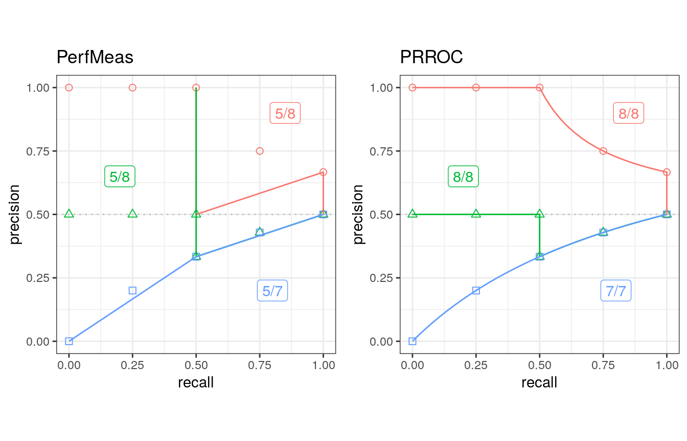
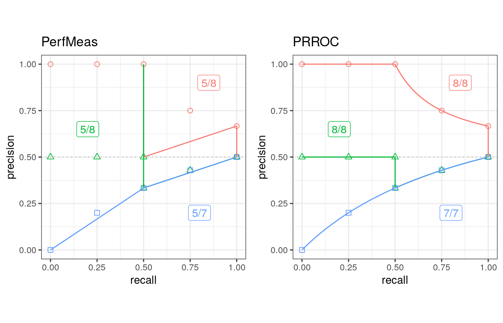
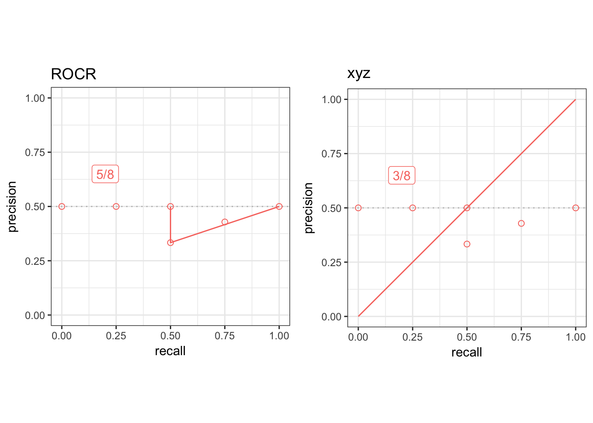
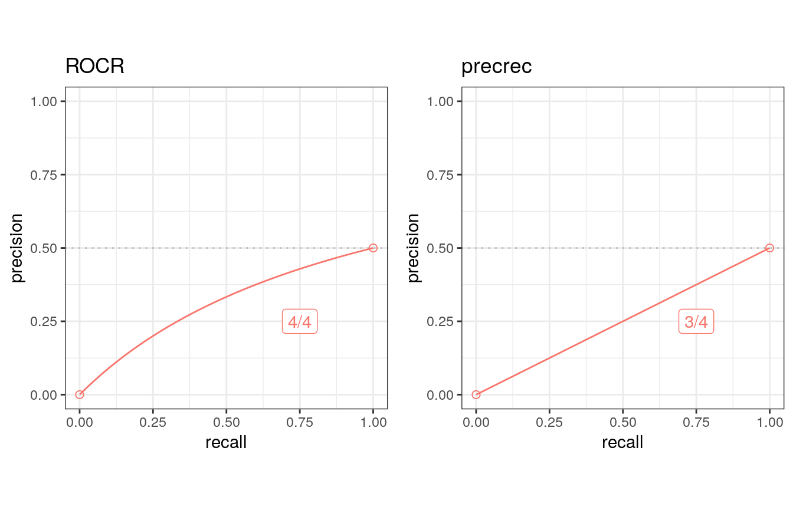

The prcbench package is a testing workbench for evaluating Precision-Recall curves.
1. Tool interface
The prcbench package provides predefined interfaces for the following five tools that calculate Precision-Recall curves.
| Tool | Language | Link |
|---|---|---|
| ROCR | R | Tool web site, CRAN |
| AUCCalculator | Java | Tool web site |
| PerfMeas | R | CRAN |
| PRROC | R | CRAN |
| precrec | R | Tool web site, CRAN |
Create a tool set
The create_toolset function generates a tool set with a combination of the five tools.
library(prcbench)
## A single tool
toolsetA <- create_toolset("ROCR")
## Multiple tools
toolsetB <- create_toolset(c("PerfMeas", "PRROC"))
## Tool sets can be manually combined to a single set
toolsetAB <- c(toolsetA, toolsetB)The create_toolset function accepts partially matched tool names. Tool names may also be case-insensitive.
library(prcbench)
## A single tool - lower case
toolsetA2 <- create_toolset("rocr")
## Multiple tools - lower case and partially matched
toolsetB2 <- create_toolset(c("perf", "prr"))Use predefined tool sets
The create_toolset function takes two additional arguments - calc_auc and store_res. The calc_auc argument makes tools calculate and retrieve the AUC score, and the store_res argument forces tools to calculate and store the curve values.
The following six tool sets are predefined with a different combination of tools and their argument values.
| Set name | Tools | calc_auc | store_res |
|---|---|---|---|
| def5 | ROCR, AUCCalculator, PerfMeas, PRROC, precrec | TRUE | TRUE |
| auc5 | ROCR, AUCCalculator, PerfMeas, PRROC, precrec | TRUE | FALSE |
| crv5 | ROCR, AUCCalculator, PerfMeas, PRROC, precrec | FALSE | TRUE |
| def4 | ROCR, AUCCalculator, PerfMeas, precrec | TRUE | TRUE |
| auc4 | ROCR, AUCCalculator, PerfMeas, precrec | TRUE | FALSE |
| crv4 | ROCR, AUCCalculator, PerfMeas, precrec | FALSE | TRUE |
## Use 'set_names'
toolsetC <- create_toolset(set_names = "auc5")
## Multiple sets are automatically combined to a single set
toolsetD <- create_toolset(set_names = c("auc5", "crv4"))2. Test data interface
The prcbench package provides two different types of test data. The first one is for benchmarking, and the second one is for evaluating the accuracy of Precision-Recall curves.
The create_testset function offers both types of test data by setting the first argument either as “bench” or “curve”.
Create a test dataset for benchmarking
The create_testset function uses a naming convention for randomly generated data for benchmarking. The format is a prefix (‘b’ or ‘i’) followed by the number of dataset. The prefix ‘b’ indicates a balanced dataset, whereas ‘i’ indicates an imbalanced dataset. The number can be used with a suffix ‘k’ or ‘m’, indicating respectively 1000 or 1 million.
## A balanced data set with 50 positives and 50 negatives
testset1A <- create_testset("bench", "b100")
## An imbalanced data set with 2500 positives and 7500 negatives
testset1B <- create_testset("bench", "i10k")
## Test data sets can be manually combined to a single set
testset1AB <- c(testset1A, testset1B)
## Multiple sets are automatically combined to a single set
testset1C <- create_testset("bench", c("i10", "b10"))Create a test dataset for curve evaluation
The create_testset function takes predefined set names for curve evaluation. These data sets contain pre-calculated precision and recall values. The pre-calculated values must be correct so that they can be compared with the results of specified tools.
The following three test sets are currently available.
- c1
- c2
- c3
## C1 test set
testset2A <- create_testset("curve", "c1")
## C2 test set
testset2B <- create_testset("curve", "c2")
## Test data sets can be manually combined to a single set
testset2AB <- c(testset2A, testset2B)
## Multiple sets are automatically combined to a single set
testset2C <- create_testset("curve", c("c1", "c2"))3. Benchmarking
The run_benchmark function internally calls the microbenchmark function provided by the microbenchmark package. It takes a test set and a tool set and returns the result of microbenchmark.
## Run microbenchmark for aut5 on b10
testset <- create_testset("bench", "b10")
toolset <- create_toolset(set_names = "auc5")
res <- run_benchmark(testset, toolset)
res## testset toolset toolname min lq mean median uq max neval
## 1 b10 auc5 AUCCalculator 1.595 2.170 4.85 2.804 3.744 14.0 5
## 2 b10 auc5 PerfMeas 0.057 0.062 55.04 0.064 0.081 274.9 5
## 3 b10 auc5 precrec 5.153 5.165 24.23 5.359 9.474 96.0 5
## 4 b10 auc5 PRROC 0.133 0.134 0.68 0.140 0.151 2.9 5
## 5 b10 auc5 ROCR 1.459 1.461 7.68 1.569 12.142 21.8 54. Evaluation of Precision-Recall curves
The run_evalcurve function evaluates Precision-Recall curves with the following five test cases.
| Test case | Description |
|---|---|
| x_range | Evaluate the range of recall values |
| y_range | Evaluate the range of precision values |
| fpoint | Check the first point |
| int_pts | Check the intermediate points |
| epoint | Check the end point |
Evaluation scores
The run_evalcurve function calculates the scores of the test cases and summarizes them to a data frame.
## Evaluate Precision-Recall curves for ROCR and precrec with c1 test set
testset <- create_testset("curve", "c1")
toolset <- create_toolset(c("ROCR", "precrec"))
scores <- run_evalcurve(testset, toolset)
scores## testset toolset toolname score
## 1 c1 precrec precrec 8/8
## 2 c1 ROCR ROCR 5/8The result of each test case can be displayed by specifying data_type = all of the print function.
## Print all results
print(scores, data_type = "all")## testset toolset toolname testitem testcat success total
## 1 c1 precrec precrec x_range Rg 1 1
## 2 c1 precrec precrec y_range Rg 1 1
## 3 c1 precrec precrec fpoint SE 1 1
## 4 c1 precrec precrec intpts Ip 4 4
## 5 c1 precrec precrec epoint SE 1 1
## 6 c1 ROCR ROCR x_range Rg 1 1
## 7 c1 ROCR ROCR y_range Rg 1 1
## 8 c1 ROCR ROCR fpoint SE 0 1
## 9 c1 ROCR ROCR intpts Ip 2 4
## 10 c1 ROCR ROCR epoint SE 1 1Visualization of the result
The autoplot shows a plot with the result of the run_evalcurve function.
## ggplot2 is necessary to use autoplot
library(ggplot2)
## Plot base points and the result of precrec on c1, c2, and c3 test sets
testset <- create_testset("curve", c("c1", "c2", "c3"))
toolset <- create_toolset("precrec")
scores1 <- run_evalcurve(testset, toolset)
autoplot(scores1)
## Plot the results of PerfMeas and PRROC on c1, c2, and c3 test sets
toolset <- create_toolset(c("PerfMeas", "PRROC"))
scores2 <- run_evalcurve(testset, toolset)
autoplot(scores2, base_plot = FALSE) 

5. Create a user-defined tool interface
In addition to the predefined five tools, users can add new tool interfaces for their own tools to run benchmarking and curve evaluation. The create_usrtool function takes a name of the tool and a function for calculating a Precision-Recall curve.
## Create a new tool set for 'xyz'
toolname <- "xyz"
calcfunc <- create_example_func()
toolsetU <- create_usrtool(toolname, calcfunc)
## User-defined tools can be combined with predefined tools
toolsetA <- create_toolset("ROCR")
toolsetU2 <- c(toolsetA, toolsetU)Like the predefined tool sets, user-defined tool sets can be used for both run_benchmark and run_evalcurve.
## Curve evaluation
testset3 <- create_testset("curve", "c2")
scores3 <- run_evalcurve(testset3, toolsetU2)
autoplot(scores3, base_plot = FALSE)
The format of the function for calculating a Precision-Recall curve
The create_example_func function creates an example for the second argument of the create_usrtool function. The actual function should also take a testset generated by the create_testset function and returns a list with three elements - x, y, and auc.
## Show an example of the second argument
calcfunc <- create_example_func()
print(calcfunc)## function (single_testset)
## {
## scores <- single_testset$get_scores()
## labels <- single_testset$get_labels()
## pred <- list(x = seq(0, 1, 1/length(scores)), y = seq(0,
## 1, 1/length(scores)), auc = 0.5)
## }
## <bytecode: 0x562e3843a998>
## <environment: 0x562e383002f0>The create_testset function produces a testset as either TestDataB or TestDataC object. See the help files of the R6 classes - help(TestDataB) and help(TestDataC) - for the methods that can be used with the Precision-Recall calculation.
6. Create a user-defined test data interface
The prcbench package also supports user-defined test data interfaces. The create_usrdata function creates two types of test datasets.
Create a user-defined test dataset for benchmarking
The first argument of the create_usrdata function should be “bench” to create a test data for benchmarking. Additionally, scores and labels are required.
## Create a test dataset 'b5' for benchmarking
testsetB <- create_usrdata("bench", scores = c(0.1, 0.2), labels = c(1, 0),
tsname = "b5")It can be used in the same way as the predefined test datasets for benchmarking.
## Run microbenchmark for ROCR and precrec on a predefined test dataset
toolset <- create_toolset(c("ROCR", "precrec"))
res <- run_benchmark(testsetB, toolset)
res## testset toolset toolname min lq mean median uq max neval
## 1 b5 precrec precrec 3.9 3.9 4.2 3.9 4.1 5.2 5
## 2 b5 ROCR ROCR 1.5 1.5 1.5 1.5 1.5 1.7 5Create a user-defined test dataset for curve evaluation
The first argument of the create_usrdata function should be “curve” to create a test dataset for curve evaluation. Scores and labels as well as pre-calculated recall and precision values are required. These pre-calculated values are used to compare with the corresponding values predicted by the specified tools.
## Create a test dataset 'c5' for benchmarking
testsetC <- create_usrdata("curve", scores = c(0.1, 0.2), labels = c(1, 0),
tsname = "c5", base_x = c(0.0, 1.0),
base_y = c(0.0, 0.5))It can be used in the same way as the predefined test datasets for curve evaluation.
## Run curve evaluation for ROCR and precrec on a predefined test dataset
toolset2 <- create_toolset(c("ROCR", "precrec"))
scores2 <- run_evalcurve(testsetC, toolset2)
autoplot(scores2, base_plot = FALSE)
7. External links
See our website - Classifier evaluation with imbalanced datasets – for useful tips for performance evaluation on binary classifiers. In addition, we have summarized potential pitfalls of ROC plots with imbalanced datasets. See our paper – The Precision-Recall Plot Is More Informative than the ROC Plot When Evaluating Binary Classifiers on Imbalanced Datasets - for more details.